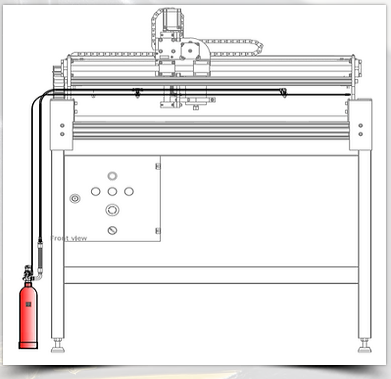
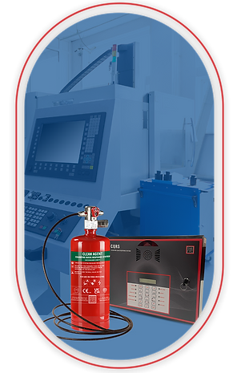
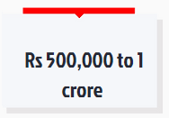
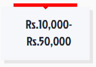
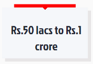
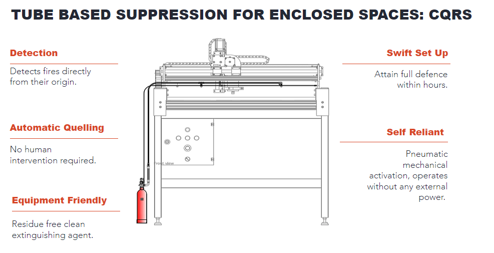

<!-- main start here-->
<main id="main">
  <section class="inner-page p-0  sec_body">
      <div class="container-fluid">
          <div class="row">
              <div class="bg_img">

                  <div class="bg_white">
                      <div class="col-8 floot">

                          <h5>Fire Solutions for</h5>


                          <h1> CNC Machines </h1>


                          <p>From the exquisite wonders of technology, CNC Machines bring to the fore an effortless way of performing complex day to day operations at manufacturing units. While these highly advanced machines render numerous benefits to the industry, they also possess a significantly high risk of fire. </p>


                          <p>CNC machines carry out repetitive robotic movements and use flammable oils, lubricants, and other metalworking fluids at high speeds and temperatures, this creates extreme levels of friction and heat that can eventually lead to a flash fire. Since these machines operate in automatic mode, they do not require human intervention 24 hours a day, which makes the situation even more alarming. </p>
                      </div>

                      <div class="col-3 floot ml-3"></div>
                  </div>

              </div>

              <div class="box_2">
                  <div class="col-9 floot mt-5">
                      <h2>
                          Ceasefire: Where Fire Safety<br>
                          Meets Reliability.</h2>

                      <p>To mitigate fire risks in commercial kitchens, they must be equipped with specialised fire
                          fighting
                          solutions that are designed to specifically address the risk of commercial kitchen fires.
                          With
                          Ceasefire’s advanced suppression systems and specialised fire extinguishers you can take the
                          safety
                          of your kitchens to another level. Our state-of-the-art solutions are meticulously crafted
                          to
                          minimise the collateral damage to commercial kitchens.</p>


                      <p>Our proven record speaks volumes – your business's well-being is our top priority. When you
                          choose
                          Ceasefire, you're not just choosing a fire safety solution. You're opting for a partner
                          that's
                          dedicated to upholding the utmost reliability, protecting your assets, safeguarding your
                          business's
                          continuity, and providing you with the peace of mind you deserve.</p>
                  </div>
                  <div class="col-2 floot ml-3">
                  </div>

              </div>

          </div>
          <div class="col-12 text-center heading_f my-2">  <h3 class="mb-0">Fire Facts That Need Your Attention</h3></div>
          <div id="myCarousel" class="carousel slide" data-bs-ride="carousel">
              <div class="carousel-indicators">
                  <button type="button" data-bs-target="#myCarousel" data-bs-slide-to="0" class="active"
                      aria-current="true" aria-label="Slide 1"></button>
                  <button type="button" data-bs-target="#myCarousel" data-bs-slide-to="1"
                      aria-label="Slide 2"></button>
                  <button type="button" data-bs-target="#myCarousel" data-bs-slide-to="2"
                      aria-label="Slide 3"></button>
              </div>
              <div class="carousel-inner">
                  <div class="carousel-item active">
                      <svg class="bd-placeholder-img" width="100%" height="100%" xmlns="http://www.w3.org/2000/svg"
                          aria-hidden="true" preserveAspectRatio="xMidYMid slice" focusable="false">
                          <rect width="100%" height="100%" fill="var(--bs-secondary-color)" />
                      </svg>
                      <div class="container">

                        
                          <div class="carousel-caption">
                           
                              <p class="opacity-75">Bureau of Indian Standards (BIS) specifies that CNC machines must be equipped with fire extinguishing equipment that is suitable for the type of fire that is likely to occur.</p>
                              <!-- <p><a class="btn btn-lg btn-primary" href="#">Sign up today</a></p> -->
                          </div>
                      </div>
                  </div>
                  <div class="carousel-item">
                      <svg class="bd-placeholder-img" width="100%" height="100%" xmlns="http://www.w3.org/2000/svg"
                          aria-hidden="true" preserveAspectRatio="xMidYMid slice" focusable="false">
                          <rect width="100%" height="100%" fill="var(--bs-secondary-color)" />
                      </svg>
                      <div class="container">
                          <div class="carousel-caption">
                           
                              <p>As per BIS, electrical faults are one of the most common causes of fires involving CNC machines, accounting for 40% of all fires. </p>
                              <!-- <p><a class="btn btn-lg btn-primary" href="#">Learn more</a></p> -->
                          </div>
                      </div>
                  </div>
                  <div class="carousel-item">
                      <svg class="bd-placeholder-img" width="100%" height="100%" xmlns="http://www.w3.org/2000/svg"
                          aria-hidden="true" preserveAspectRatio="xMidYMid slice" focusable="false">
                          <rect width="100%" height="100%" fill="var(--bs-secondary-color)" />
                      </svg>
                      <div class="container">
                          <div class="carousel-caption">
                           
                              <p>Mechanical failures are one of the most common causes of fires involving CNC machines, accounting for 25% of all fires. - ISO</p>
                              <!-- <p><a class="btn btn-lg btn-primary" href="#">Browse gallery</a></p> -->
                          </div>
                      </div>
                  </div>
              </div>
              <button class="carousel-control-prev" type="button" data-bs-target="#myCarousel" data-bs-slide="prev">
                  <span class="carousel-control-prev-icon" aria-hidden="true"></span>
                  <span class="visually-hidden">Previous</span>
              </button>
              <button class="carousel-control-next" type="button" data-bs-target="#myCarousel" data-bs-slide="next">
                  <span class="carousel-control-next-icon" aria-hidden="true"></span>
                  <span class="visually-hidden">Next</span>
              </button>
          </div>


          <div class="box_4">
              <div class="col-12 text-center">
                  <h2>Common Causes Of Fire in a CNC Machine</h2>

                
              </div>
              <div class="row text-center">
                <div class="col-md-1 "></div>
                  <div class="col-md-2 col-lg-2 col-xs-12">
                
              </div>
              <div class="col-md-2 col-lg-2 col-xs-12">
                
              </div>
              <div class="col-md-2 col-lg-2 col-xs-12">
                
              </div>
              <div class="col-md-2 col-lg-2 col-xs-12">
                
              </div>
              <div class="col-md-2 col-lg-2 col-xs-12">
                
              </div>
              <div class="col-md-1 "></div>
             

              </div>


          </div>

          <div class="box_5 row">
              <div class="col-12 text-center mb-2">
                  <h2>
                      Cost of Not Addressing The Risk</h2>
              </div>

              <div class="col-12 mt-5">

                  <div class="col-3 floot text-center">
                      <p>Average Cost of a<br>  CNC Machine</p>
                  </div>
                  <div class="col-3 floot text-center ">
                      <p>Average Down <br> Time</p>
                  </div>
                  <div class="col-3 floot text-center ">
                      <p>Downtime Cost<br> Per Hour</p>
                  </div>
                  <div class="col-3 floot text-center ">
                      <p>Average of Cost of<br> Damages Due to Fire</p>
                  </div>

              </div>

              <div class="col-12 text-center mt-5 pull-left" style="font-weight: 500;">* Estimated costs as per industry experts and secondary data.</div>
          </div>

          <div class="box_6 row">
              <div class="col-12 text-center">
                  <h2>

                    Safeguards in Just 3 Steps</h2>


              </div>

              <div class="bg_white2 mt-5">

                  <div class="col-4 floot mar_top text-center">
                          <h3>
                            DETECT</h3>
    
                          <p>Identifies fire at its origin through specialised Heat Sensing Tube. </p>
    

                  </div>

                  <div class="col-4 floot mar_top text-center">
                          <h3>                 
                            TRIGGER</h3>
          
                          <p>The mechanism triggers autonomously, safeguarding even in unattended situations. </p>
          
                  </div>
                  <div class="col-4 floot mar_top text-center">
                <h3>                 
                  SUPPRESS</h3>

                <p>Extinguishes fire rapidly ensuring safety for individuals, machinery, and surroundings.</p>

            </div>


              </div>


          </div>

          <div class="bg_img2">
              <div class="col-12 text-center">
                  <div class="BG_TOP"><h3>Fusion of Flexibility and Expertise</h3></div></div>
                  <div class="bg_white3">
                      
              <div class="col-12 floot">
                  <div id="carouselExampleIndicators" class="carousel slide" data-ride="carousel">
                      <ol class="carousel-indicators">
                        <li data-target="#carouselExampleIndicators" data-slide-to="0" class="active"></li>
                        <li data-target="#carouselExampleIndicators" data-slide-to="1"></li>
                        <li data-target="#carouselExampleIndicators" data-slide-to="2"></li>
                      </ol>
                      <div class="">
                        <div class="carousel-item active">
                          
                        </div>
                        <!-- <div class="carousel-item">
                          
                        </div>
                        <div class="carousel-item">
                          
                        </div> -->
                      </div>
                      <a class="carousel-control-prev" href="#carouselExampleIndicators" role="button" data-slide="prev">
                        <span class="carousel-control-prev-icon" aria-hidden="true"></span>
                        <span class="sr-only">Previous</span>
                      </a>
                      <a class="carousel-control-next" href="#carouselExampleIndicators" role="button" data-slide="next">
                        <span class="carousel-control-next-icon" aria-hidden="true"></span>
                        <span class="sr-only">Next</span>
                      </a>
                    </div>
      
      
              </div>
              
              
          
              
          
                  
      </div>
      </div>


          <app-app-product-details [ApplicationAreaId]="2019">
          </app-app-product-details>
      </div>
  </section>
</main>